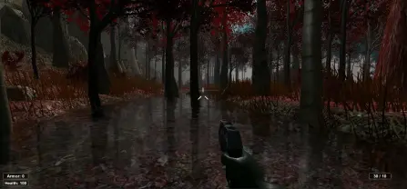

2009-től a Szegedi Tudományegyetemen kezdtem meg tanulmányaimat mérnök informatikus Bsc szakon, ahová kezdetben a játékfejlesztés, a programozás és a robotika iránti érdeklődésem irányított. Az egyetem alatt különféle munkákat vállaltam. Végül megszereztem a diplomát.
A szakdolgozatom témája egy FPS (First Person Shooter) játék készítése volt, amit Unity3D segítségével készítettem és C# nyelven programoztam. 6 pályán lehetett végighaladni, különböző ellenfeleket kiiktatva. Az elkészülte után egy ideig letölthetővé vált a Unity Assets Store-ban és kerestem is vele; erre fiatal egyetemistaként igazán büszke voltam. A legfontosabb tanulság az volt, hogy egyedüli fejlesztőként mennyire időigényes egy ekkora kaliberű projekt, és mindig becslést kell adni a munkára.
A Unity3D-ben szerzett tapasztalataimnak köszönhetően az egyetemen keresztül kerestek meg egy állásajánlattal, amit örömmel el is fogadtam. A feladatom a DL-Weld Trainer nevű egyedi hegesztőszimulátor további fejlesztése volt, szintén C# nyelven, amit korábban más fejlesztők foltozgatak; és abban az időben rajtam volt a sor, amit az elfogadhatóan kész állapotig vittem. Az eszköz hardver részekből és szoftverből állt, célja hegesztő tanoncok betanítására és munkájuk kiértékelése volt. A munkadarabon és ál- hegesztőpisztolyon elhelyezett markerek pozícióját a sisakon elhelyezett nagysebességű kamera vette, és elhelyezte a modelljüket a virtuális térben. Izgalmas kihívás volt, a munka 2014 és 2015 között zajlott. Rendszeres konzultációt igényelt, ekkor használtam először verziókezelő rendszert, a Subversion-t (SVN).